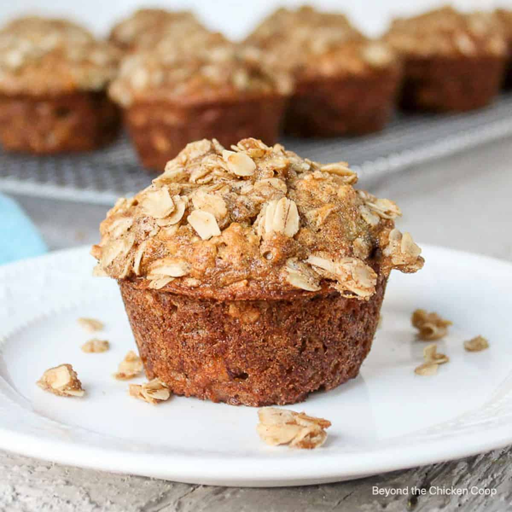

Banana Oat Muffin Recipe
Ingredients:
- 2 ripe bananas, mashed
- 1 cup rolled oats
- 1 cup all-purpose flour
- ½ teaspoon baking soda
- 1 teaspoon baking powder
- ½ teaspoon cinnamon
- ¼ teaspoon salt
- ½ cup brown sugar
- 1 egg
- ½ cup milk
- ¼ cup melted butter or vegetable oil
- 1 teaspoon vanilla extract
- ½ cup walnuts or chocolate chips (optional)
Instructions:
- Preheat oven to 180°C (350°F) and line a muffin tin with paper liners.
- In a large bowl, mix mashed bananas, egg, milk, melted butter, and vanilla.
- In a separate bowl, whisk together oats, flour, baking soda, baking powder, cinnamon, salt, and brown sugar.
- Gradually combine the dry ingredients with the wet ingredients, folding gently.
- Mix in walnuts or chocolate chips, if using.
- Divide batter evenly into muffin cups.
- Bake for 18-22 minutes or until a toothpick inserted comes out clean.
- Let muffins cool before serving.